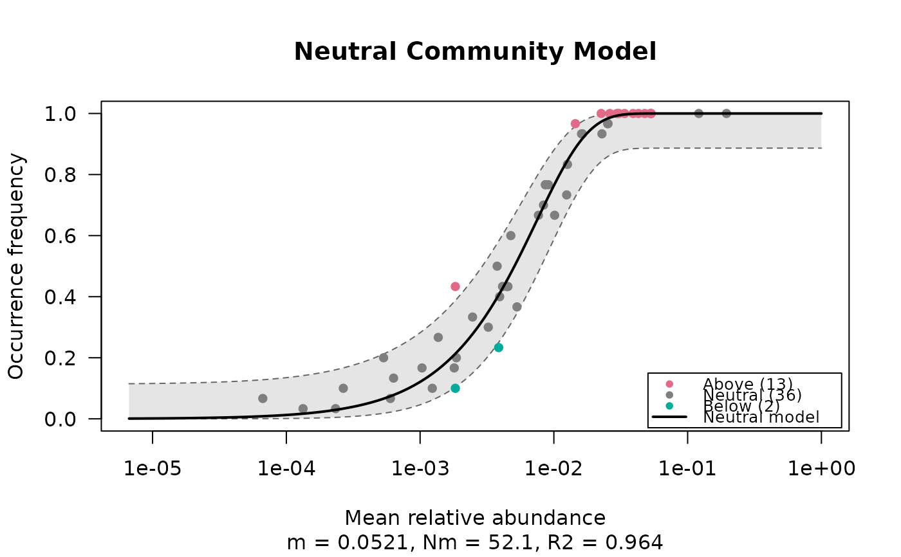
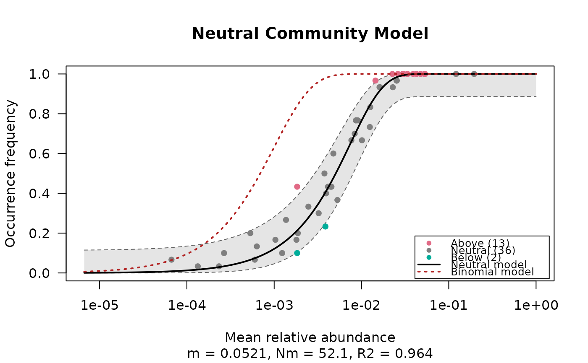
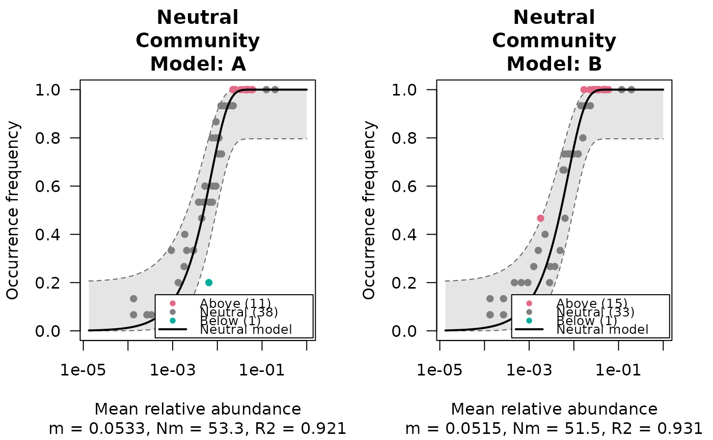

Fits Sloan et al.'s (2006) neutral community model to a count table, as Burns et al. (2016) do: each feature's occurrence frequency (the share of samples it is detected in) against its mean relative abundance, with one free parameter, the immigration probability \(m\). Features detected more often than the fit predicts (above its confidence band) may be favoured by the habitat or disperse well; those detected less often (below it) may be dispersal-limited or selected against.
Usage
neutral_model(
counts,
groups = NULL,
data = NULL,
pool = NULL,
margin = 1L,
conf_level = 0.95,
cpus = n_cpus()
)Arguments
- counts
A count table (samples \(\times\) features) of whole numbers, or any of the objects listed under Input Types, rarefied to equal depth (see
rarefy()). The depth \(N\) sets the detection limit \(1/N\), so proportions are not accepted. With unequal depths, \(N\) is their mean, with a warning (as Burns et al.'s code does). Samples with no counts are left out, with a warning.- groups
Optional: fit the model separately within each group of samples (a habitat, a host stage, ...). One value per sample, matched to the samples by name when both are named, else in the samples' order; or, with
data, the name of one of its columns. Samples whose group isNAare left out. Each group needs at least 2 samples. Default:NULL, one fit to every sample.- data
Optional sample metadata: a data frame with one row per sample, holding
groupsas a column. Rows are matched to the samples incountsby row name; without row names, they must be in the same order as the samples. Default:NULL.- pool
Optional count table (samples \(\times\) features, the same
marginascounts) of the source metacommunity: each feature's mean relative abundance \(p\) is its share of the pool's counts instead of the share of the counts incounts. Matched to the features ofcountsby name (or by position when either has no feature names); every feature present incountsmust be inpool. Default:NULL, the samples themselves.- margin
The margin containing samples.
1if samples are rows,2if samples are columns. Ignored whencountsis a special object class (e.g.phyloseq). Default:1- conf_level
The confidence level of the interval for \(m\) and of the Wilson band around the fit: a number strictly between 0 and 1. Default:
0.95, as Burns et al. and neufit.- cpus
How many parallel processing threads should be used. The default,
n_cpus(), is the CPU cores this R process may use, within any limits set on it. Results are the same for anycpus.
Value
A data frame of class c("ecodive_neutral_model", "data.frame"),
one row per feature fitted (with groups, per group and feature),
ordered by mean abundance (within each group), with columns:
groupThe group (a factor; only with
groups).featureThe feature's name (its index if it has none).
mean_abundance\(p\), its mean relative abundance in the metacommunity: its share of all the counts (of the group, or of
pool).occurrenceThe share of the samples it is present in.
predictedThe neutral model's occurrence at the fitted \(m\).
lower,upperThe Wilson interval (Wilson 1927) of a proportion
predictedamongn_samplessamples, atconf_level.partition"above"(occurrence > upper),"below"(occurrence < lower) or"neutral": a factor. A difference must exceed \(10^{-12}\), so that rounding doesn't decide at the band's edges (at occurrence 1, the upper end is 1 to within rounding).predicted_binomial,predicted_poissonThe occurrence that random sampling alone predicts: \(1 - (1 - p)^N\) (binomial) and \(1 - e^{-Np}\) (Poisson), with no parameter to fit.
Features that are absent from every sample (of the group), or whose
\(p\) is 0, can't be fitted and are left out (as Burns et al. do);
their names are in attribute dropped.
Attributes, each a number (with groups, a named vector, one value per
group):
method"neutral_model".m,m_lower,m_upperThe least-squares immigration probability and its profile confidence interval at
conf_level(0 orInfwhen the residual sum of squares stays within the cutoff on that side).m_seThe standard error of
mby the delta method, as neufit (lmfit) reports it.nm\(Nm\), the number of immigrants per generation.
n_individuals\(N\), the reads per sample (their mean).
detectionThe detection limit \(1/N\).
n_samplesThe number of samples fitted.
r_squared,rmse,aic,bicThe fit's \(R^2\) (\(1 - SS_{res} / SS_{tot}\); it can be negative, and is
NAwhen every feature has the same occurrence), the root mean squared error \(\sqrt{SS_{res} / (K - 1)}\) for \(K\) features, and the AIC and BIC of a Gaussian likelihood of the residuals (2 parameters: \(m\) and the variance).r_squared_binomial,rmse_binomial,aic_binomial,bic_binomial, and the same with_poissonThe same for the binomial and Poisson models, whose likelihoods have a fitted mean and variance (2 parameters), as Burns et al.'s. A lower AIC than the neutral model's means random sampling alone fits better.
conf_levelAs given.
droppedThe features left out (with
groups, a list by group).
Details
The model. In a local community of \(N\) individuals that loses
one individual at random each step and replaces it, with probability
\(m\), by an immigrant from a metacommunity where the feature has
relative abundance \(p\) (and otherwise by local reproduction), the
feature's local relative abundance \(x\) is, at equilibrium,
Beta-distributed with parameters \(Nmp\) and \(Nm(1 - p)\) (Sloan
et al. 2006). A feature is detected when \(x > 1/N\), so its expected
occurrence is
$$F(p) = 1 - I_{1/N}(Nmp,\; Nm(1 - p)),$$
with \(I\) the regularized incomplete beta function
(stats::pbeta()). Small \(m\) (rare immigration) lets drift spread
the feature's abundance among communities, so it is often missing; large
\(m\) keeps every community close to the metacommunity, and the curve
approaches random sampling.
The fit. \(N\) is fixed at the reads per sample, and \(m\) is
the value that minimizes the residual sum of squares \(\sum_i
(f_i - F(p_i))^2\) over the \(K\) features: Brent's method
(stats::optimize()) over \(\log m\) in \([10^{-12}, 10^4]\),
started from the best of a grid of 61 values (a warning when two minima
are equally good), then polished by solving for the zero of the
gradient (stats::uniroot()). The profile interval holds the \(m\)
where \((SS(m) - SS(\hat m)) / s^2\) is at most the conf_level
quantile of \(F_{1, K-1}\), with \(s^2 = SS(\hat m) / (K - 1)\):
what R's confint() gives for an nls() fit (Burns et al.'s
interval), with its ends solved for exactly instead of interpolated.
It assumes residuals of equal variance; occurrences are binomial, so in
simulations of the model its coverage is somewhat below conf_level
(about 87\
What it means. The fit describes how far occurrence follows abundance as drift and dispersal alone would make it; it is not a test of neutrality, and a high \(R^2\) doesn't show that a community is neutral. The model assumes equal sampling depths, a single metacommunity, and communities at equilibrium. Features outside the band are candidates for selection or dispersal effects, not proof of them. \(m\) is a probability, but least squares can give \(m > 1\) on near-saturated data (most features in most samples); it is then reported, with a warning.
Differences from Burns et al.'s code and neufit
\(m\) is the exact least-squares value (it agrees with a 40-digit computation to about \(10^{-13}\)). Burns et al.'s Levenberg-Marquardt
nlsLM()and neufit's lmfit stop earlier: their \(m\) agree with it to about \(10^{-5}\) and \(10^{-6}\).The interval for \(m\) has exact ends (R's
confint()interpolates a sampled profile, so Burns et al.'s ends match to about \(10^{-5}\)). Burns et al. report the lower half-width only.\(m\) is not bounded above (neufit bounds it to \([0, 1]\)), as in Burns et al.'s code, but a warning says when it exceeds 1.
The AICs and BICs are computed in closed form (Burns et al. maximize the likelihoods numerically, with
stats4::mle(), which agrees to about \(10^{-6}\)).The binomial prediction is \(1 - (1 - p)^N\) even when \(N\), a mean depth, isn't a whole number.
With
pool, \(p\) is the feature's share of all the pool's counts. Burns et al. divide its mean count in the pool by the \(N\) ofcounts, which is the same when the pool is rarefied to the same depth.neufit rarefies the table itself (at random);
neutral_model()warns about unequal depths and leaves rarefying torarefy().A feature is above or below the band only by more than \(10^{-12}\); the references' strict comparisons can flip on rounding at occurrence 1.
groupsfits each group on its own, as subsettingcountswould.iCAMP's
snm(), which builds on Burns et al.'s code, rounds a mean depth \(N\) to a whole number, and keeps features whose \(p\) in the pool is 0; Burns et al.'sfit_sncm()(in tyRa) andneutral_model()do neither.
MicEco's neutral.fit() fits \(m\) by maximum likelihood (of a
binomial model of the occurrences) instead of least squares, so its
\(m\) differs a little from these.
Same names in other packages
The model is also known as the neutral community model (NCM) or Sloan's
neutral community model (SNCM): MicEco's neutral.fit(), tyRa's
fit_sncm() and iCAMP's snm() fit it too.
Input Types
The counts parameter is designed to accept a simple numeric matrix, but
seamlessly supports objects from the following biological data packages:
phyloseqrbiomSummarizedExperimentTreeSummarizedExperiment
For large datasets, standard matrix operations may be slow. See
vignette('performance') for details on using optimized formats
(e.g. sparse matrices) and parallel processing.
References
Sloan, W. T., Lunn, M., Woodcock, S., Head, I. M., Nee, S., & Curtis, T. P. (2006). Quantifying the roles of immigration and chance in shaping prokaryote community structure. Environmental Microbiology, 8, 732–740. doi:10.1111/j.1462-2920.2005.00956.x
Burns, A. R., Stephens, W. Z., Stagaman, K., Wong, S., Rawls, J. F., Guillemin, K., & Bohannan, B. J. M. (2016). Contribution of neutral processes to the assembly of gut microbial communities in the zebrafish over host development. The ISME Journal, 10, 655–664. doi:10.1038/ismej.2015.142
Sieber, M., Pita, L., Weiland-Bräuer, N., et al. (2019). Neutrality in the metaorganism. PLoS Biology, 17, e3000298. doi:10.1371/journal.pbio.3000298
Wilson, E. B. (1927). Probable inference, the law of succession, and statistical inference. Journal of the American Statistical Association, 22, 209–212. doi:10.1080/01621459.1927.10502953
See also
plot.ecodive_neutral_model() for the fitted curve, and
rarefy().
Examples
# A neutral community: each sample draws its composition around the
# metacommunity's (p), with immigration m = 0.05, then 1000 reads.
set.seed(1)
p <- rgamma(60, 0.3); p <- p / sum(p)
counts <- t(replicate(30, {
x <- rgamma(60, 1000 * 0.05 * p)
as.vector(rmultinom(1, 1000, x / sum(x)))
}))
dimnames(counts) <- list(paste0('S', 1:30), paste0('F', 1:60))
res <- neutral_model(counts)
res
#> # A data.frame: 51 × 9
#> # Neutral Community Model
#> # m = 0.05206 (95% CI 0.04589 to 0.05919), Nm = 52.06, R2 = 0.964; 13 above, 36 neutral, 2 below
#> feature mean_abundance occurrence predicted lower upper partition
#> <chr> <dbl> <dbl> <dbl> <dbl> <dbl> <fct>
#> 1 F45 6.67e-05 0.0667 0.00844 0.000493 0.128 neutral
#> 2 F6 0.000133 0.0333 0.0168 0.00177 0.142 neutral
#> 3 F42 0.000233 0.0333 0.0293 0.00473 0.161 neutral
#> 4 F22 0.000267 0.1 0.0334 0.00594 0.167 neutral
#> 5 F34 0.000533 0.2 0.066 0.0182 0.212 neutral
#> 6 F17 6e-04 0.0667 0.074 0.0218 0.223 neutral
#> 7 F29 0.000633 0.133 0.078 0.0236 0.228 neutral
#> 8 F25 0.00103 0.167 0.125 0.0482 0.287 neutral
#> 9 F1 0.00123 0.1 0.148 0.0616 0.314 neutral
#> 10 F21 0.00137 0.267 0.162 0.0707 0.331 neutral
#> # … 41 more rows
#> # … 2 more columns: predicted_binomial <dbl>, predicted_poisson <dbl>
#> # Use print(x, n = ...) to see more rows
#> # Attributes: method, m, m_lower, m_upper, m_se, nm, n_individuals, detection,
#> # n_samples, r_squared, rmse, aic, bic, r_squared_binomial, rmse_binomial,
#> # aic_binomial, bic_binomial, r_squared_poisson, rmse_poisson, aic_poisson,
#> # bic_poisson, conf_level, dropped
attr(res, 'm')
#> [1] 0.05206453
plot(res)

plot(res, 'binomial')

# One fit per group of samples
res <- neutral_model(counts, groups = rep(c('A', 'B'), each = 15))
attr(res, 'm')
#> A B
#> 0.05327955 0.05152921
plot(res)
